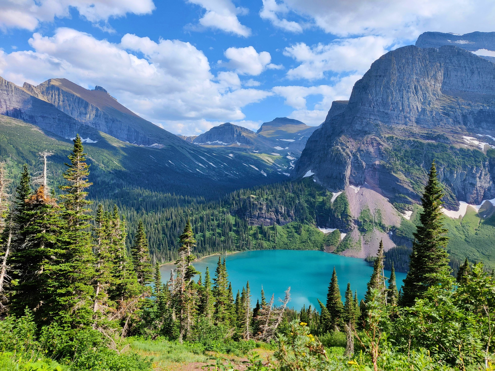
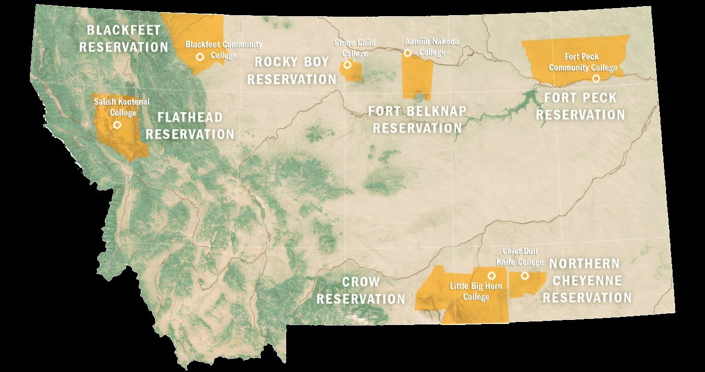

Native Language & History
MONTANA TRIBAL NATIONS

A space dedicated to helping communities understand the rights, boundaries, and traditions that shape Indigenous practices across generations.
EXPLORE LANGUAGES →
*The map to the left is an official representation of the federally recognized tribal reservations within the state of Montana, home to 12 distinct tribal nations.
A people without the knowledge of their past history, origin and culture is like a tree without roots.
A living resource built by and for Montana's tribal communities. Learn vocabulary, explore sentence structure, and translate phrases from the many Indigenous languages that call this land home.
Explore the histories, leaders, and treaty agreements that have shaped Montana's tribal nations — stories of resilience, sovereignty, and survival that deserve to be remembered.
Listen to and read stories passed down through generations — oral traditions, legends, and personal accounts from Montana's tribal nations that keep culture alive.
We are Leon Birdhat and Luka Derry, students at Montana State University. Leon is a Computer Science major with a minor in Native Studies. Luka is a Computer Science major with a minor in U.S. History.
This project was created to support Indigenous language preservation and cultural education across Montana's tribal nations. We hope this site serves as a respectful, community-driven space for learning, sharing stories, and honoring the histories and traditions that have shaped this land for generations.
Leon Birdhat
Computer Science Major • Native Studies Minor
birdhatl43@gmail.com
Luka Derry
Computer Science Major • U.S. History Minor
luka.derry@example.com
Montana State University
Bozeman, Montana